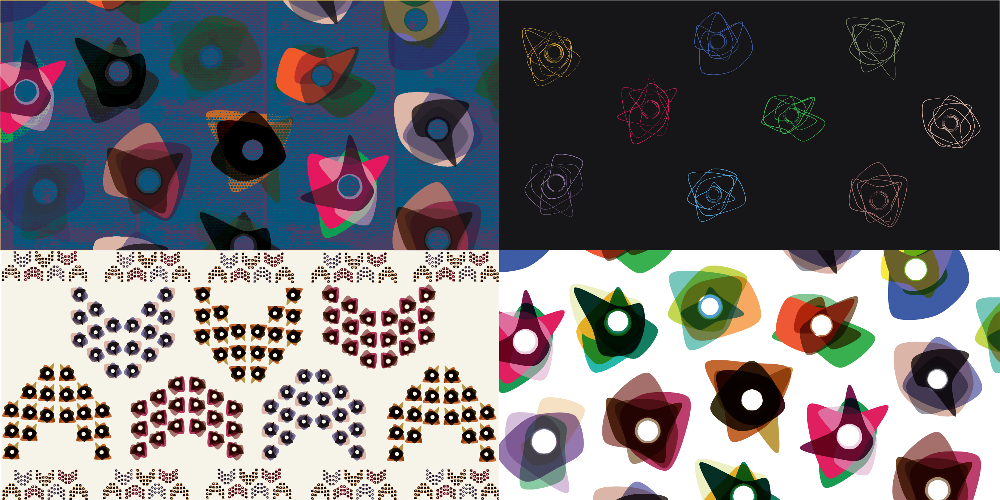

Wearable Self, Wearable Data
The Quantified Self x Fashion

“Wearable Self, Wearable Data” is a data-driven design project to create customizable textile design and fashion items generated by self-data, which is an attempt to make quantified self-data more meaningful and memorable for individuals. A traditional medium that represents our self-identity was fashion, which often called as our second skin, and now in the age of big data, our quantified, digitized self-data forms a new part of our identities — we all unconsciously gather data from the sensors on our smartphone and wearable devices. However, in many cases, those numbers and graphs from wearable devices fails to make a meaningful connection with us. In this context, “Wearable Self” attempts to turn the fragmented data that belongs to us into art which we can more empathize and appreciate. Making self-data tangible and wearable has a unique possibility of personalization and customization in terms of fashion design. Life is a full of moments and patterns and everyone is creating each unique patterns in life. By turning those aggregated numbers into personalized fashion items which we can wear and own, I believe the meaningless data flow can be mementos that help us commemorate moments in our life.
 >
>
Deep Mapping
A Year of Instagram Photo, and Mood Log.

Participaroty Mapping
Where Are You From?